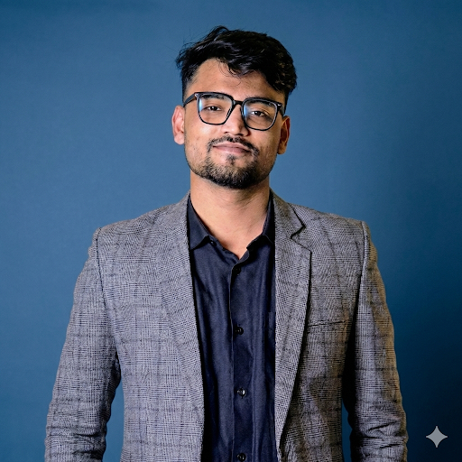

BSc in Computer Science & Engineering student at AIUB, Dhaka. Passionate about building data-driven software, exploring machine learning, and engineering robust systems that solve real-world problems.

I'm a BSc Computer Science & Engineering student at American International University-Bangladesh (AIUB), Dhaka, currently serving as a Software Engineer Intern at NN Services & Engineering Ltd (NNSEL). Alongside maintaining strong academic performance, I focus on applying my knowledge in real-world software development.
My work centers around full-stack web development, building scalable and production-ready applications using React.js, Node.js, Tailwind CSS, and .NET Core. I have hands-on experience with RESTful API development, database design, and backend architecture, ensuring clean, maintainable, and performance-driven systems.
I am passionate about machine learning and data-driven engineering, constantly expanding my skills to build intelligent, impactful solutions. My goal is to engineer robust systems that solve real-world problems with efficiency, scalability, and clean design.
RESTful attendance system built with ASP.NET Core Web API and EF Core using clean 3-layer architecture. Features secure CRUD operations, attendance marking, and student-class mapping with reliable database persistence.
MVC-driven social media platform featuring role-based access control (RBAC), user interactions, post management, and a marketplace module. MySQL-backed with structured authentication and authorization flows.
Automated preprocessing pipeline in R for loan approval datasets, handling missing values, applying IQR-based outlier removal, and improving class balance to produce clean, model-ready features.
Comprehensive hospital database system with normalized relational schemas covering patients, doctors, wards, appointments, and billing. Strict integrity constraints ensure consistent record handling and efficient querying.
Java Swing desktop application for managing jobs, workers, and customer requests. Features an admin drag-and-drop interface, real-time progress tracking, job workflow validation, and smooth task handling.
2D railway scene simulation built in C++ with OpenGL, featuring animated rendering, smooth day/night transition effects, and event-driven interactive controls for an immersive experience.
Built an end-to-end NLP pipeline to group products based on sentiment signals extracted from text data. Leveraged TF-IDF vectorization and lemmatization for feature extraction, then applied DBSCAN clustering with PCA dimensionality reduction for interpretable, sentiment-driven product segmentation.
Developed a DenseNet121-based deep learning model for osteoporosis prediction from knee X-ray images, achieving an 87.5% recall score. Integrated SE (Squeeze-and-Excitation) Attention mechanisms and Grad-CAM visualizations to improve model interpretability and support clinical decision-making.
Developed an EfficientNet-B3–based deep learning model for multi-class waste image classification, achieving 94% overall accuracy with 92% precision and 90% recall. The model demonstrated strong convergence and generalization while outperforming EfficientNetV2, YOLOv8n, and EfficientNet-B0 across nine waste categories.
Developed a multi-task deep learning framework for brain tumor MRI analysis, achieving 95.6% overall accuracy in classifying glioma, meningioma, pituitary tumor, and healthy cases. The model showed strong performance across all classes with minor confusion between visually similar tumors, demonstrating its effectiveness for automated brain tumor diagnosis.
American International University Bangladesh
Chandpur Government College, Chandpur
Hasan Ali Govt. High School, Chandpur
I'm currently seeking software development opportunities where I can apply my skills in full-stack development, .NET Core, and machine learning, while contributing to meaningful projects that support both personal growth and impactful outcomes.
Whether it's a job opportunity, collaboration, or a discussion about technology — I'm always open to connect and explore ways to grow my career.
Send a Message